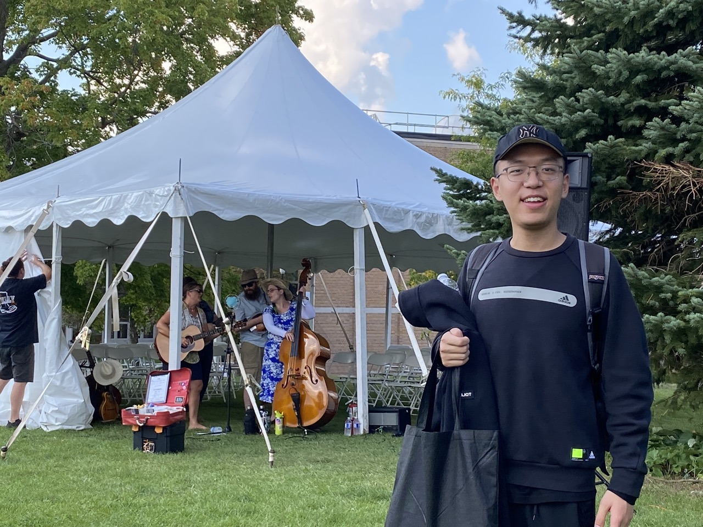

Email: y5jing [at] uwaterloo [dot] ca
I am a MMath student in the Department of Statistics and Actuarial Science at University of Waterloo, where I am very fortunate to be advised by Prof. Chengguo Weng. Currently, I’m looking for a research topic in Finance. Previously, I completed my undergraduate studies at the University of Manchester, in the Mathematics Department, advised by Prof. Korbinian Strimmer.
My research is at the intersection of maths, finance and machine learning.
I’m currently spending my 3rd term as a master student in UWaterloo.
Email: y5jing [at] uwaterloo [dot] ca
Discord username: dodojing
Github link: yqjing